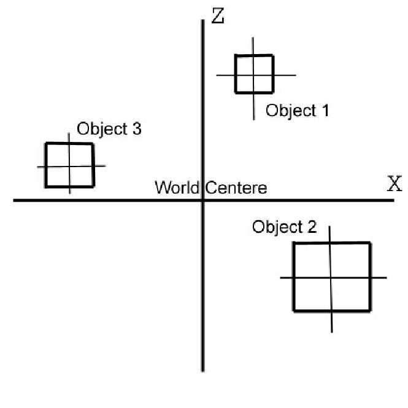

Добавим матрицу Мира. Мировые и Локальные координаты объекта
Загрузить архив с примерами ЗДЕСЬ.
Не обязательно каждую вершину модели умножать на матрицу мира, если нам только нужно сдвинуть объект. Можно поступить так (это сократит время вычислений):
struct vector3
{
float x,y,z;
};
int num_verts = 8;
vector3 vert_buff[8];
//перемещаем объект на сцене
for (int i = 0; i < 8; i++ )
{
vert_buff[i].x += 20.0f;
vert_buff[i].y += 30.0f;
vert_buff[i].z -= 10.0f;
}
В этом примере выше мы не умножаем вершины на матрицу мира, просто добавляем смещение, как это происходит при умножении вектора на матрицу. Такие вычисления сокращают время одного кадра.
Что может матрица мира? Главное назначение матрицы мира- размещать объекты на сцене. Сцена это трехмерное пространство, и у сцены есть центр, и мы размещаем объекты относительно этого центра сцены. При помощи матрицы мира мы можем перемещать объекты на сцене (каждому объекту определить свою позицию на сцене), поворачивать объекты на сцене, масштабировать объекты (т.е. менять размер объектов). Когда мы в прошлых примерах поворачивали куб вокруг осей X,Y,Z, мы тоже использовали матрицу мира, т.к. матрицы поворота это тоже мировые матрицы, мы их комбинировали что бы получить одновременно поворот по оси X,Y,Z. Достаточно определить матрицу мира, и умножить все вершины объекта на эту матрицу мира (умножение вектора на матрицу), и мы можем переместить объект, повернуть или изменить его размер.
Когда мы хотим создать куб в 3D пространстве мы должны задать координаты его вершин относительно осей X,Y,Z. К примеру на рисунке в первой статье мы видим изображение куба в трехмерном пространстве – локальном. Каждая вершина куба отталкивается в своих координатах от центра куба. То есть центр куба – это начало координат трех осей x,y,z. Это локальное пространство объекта в котором мы осуществляем построение данного объекта. Локальные координаты используються при моделировании объекта в пакетах трехмерного моделирования (например 3DS Max или Maya). Пространство объекта (локальные координаты) обычно используеться дизайнерами по графике, когда они создают модель. То есть центр модели- это центр координатной системы X,Y,Z. Так же модель сохраняеться на диске в координатах локального пространства. Ваша программа может создать буфер вершин, что бы представить такую модель (например мы создаем в приложении сферу при помощи параметрического уравнения сферы), или инициализировать буфер данными из файла, содержащего саму модель (например наша модель куба записана в текстовый файл). Поэтому вершины в буфере вершин храняться в координатах локального пространства модели и для удобства должны быть расположенными по ходу часовой стрелки. То есть каждый треугольник содержит три вершины, и обход этих вершин (как строится треугольник) по часовой стрелке.
Когда мы говорим о мировом пространстве мы имеем ввиду новую систему координат в которую укладывается локальная система координат каждого объекта на сцене. Посмотрите на рисунок выше. На нем изображена мировая система координат всей сцены, и на сцене три объекта. Каждый объект имеет свой собственный центр- локальную систему координат, но все эти объекты размещены в одном, мировом пространстве у которого тоже есть центр. То есть локальные центры каждого из этих трех объектов находятся все в мировом пространстве вокруг центра мирового пространства. Это пространство сцены на которой размещены эти три объекта. Пространство каждого объекта на сцене находиться в отношении с новой мировой системой координат –мировым пространством, новым центром осей - мировым. То есть в каждом локальном пространстве мы можем содать только один объект который имеет свои координаты вершин x,y,z. Но в мировом пространстве мы размещаем эти объекты все вместе и они все имеют общую ось x,y,z- ось мировой системы координат. Если локальная система координат для каждого объекта своя – то мировая система координат для всех объектов общая- одна для всей сцены, для всех объектов сцены. В локальных координатах объект имеет свой центр. Но в мировых координатах есть свой центр, относительно которого расположены другие объекты.
Что бы лучше объяснить данную картину позвольте привести аналогию между мировым пространством и обычной комнатой. Предположим, через центр комнаты проходят координатные оси x,y,z- мировые оси. Каждый объект в данной комнате – книжная полка, кресло, журнальный стоик – относительно этих мировых осей тоже имеет свои координаты – центр книжной полки, центр кресла, центр журнального столика. Но все центры этих объектов, относительно которых они построены – все эти центры расположены в одной, новой системе координат со своим центром – мировой- нашей с вами комнате к примеру. Если мы рассмотрим каждый из этих объектов отдельно – книжная полка, кресло, журнальный столик – то все они имеют свой собственный центр, координатные оси- локальные оси. Например журнальный столик может быть в длину 2 метра. Это значит что по локальным координатам x данного объекта – журнального столика который вы можете нарисовать в 3DS Max – влево по оси x столик имеет координаты -1 и вправо +1 – то есть всего его ширина 2 метра. Но в мировом пространстве – пространстве комнаты, которая имеет свой центр координат – журнальный столик может быть расположен в x координатах 4 и 6 – то есть тоже 2 метра шириной с центром в мировой координате 5. Когда в локальной системе координат каждый объект имеет свой центр локальных координатных осей, и он построен, этот объект построен относительно этих координатных осей – все вершины объекта расположены вокруг локального центра координат, то в мировой координатной системе все объекты сцены имеют общий центр координат – центр мировой системы координат, относительно которой расположены координаты вершин каждого из объектов сцены. И соответственно центры всех локальных координатных осей всех объектов расположены относительного одного центра – центра мировой системы координат.
Каждый объект сцены, мирового пространства имеет свою матрицу мира, так как каждый объект имеет свой размер, позицию и ориентацию. Матрицы мира используются что бы задать объекту на 3D сцене позицию, масштаб объекта, и сориентировать 3D объект в 3D пространстве. Что делает наш конвеер рендеринга – умножение каждой локальной вершины каждого объекта в сцене на матрицу мира. Можно таким образом при помощи матрицы мира анимировать объекты на сцене, если в течении каждого кадра менять ориентацию и положение объекта.
Например в предыдущих примерах в нашем конвеере рендеринга мы к координате Z добавляли 15 единиц так:
v.z = v.z + 15.0f;
Этого же можна добится построив такую матрицу мира:
| 1, 0, 0, 0, |
| 0, 1, 0, 0, |
| 0, 0, 1, 0, |
| 0, 0, 15, 1, |
typedef float matrix4x4[4][4];
matrix4x4 mxWorld = {
1.0f, 0.0, 0.0, 0.0,
0.0, 1.0f, 0.0, 0.0,
0.0, 0.0, 1.0f, 0.0,
0.0f, 0.0f, 15.0f, 1.0f };
Если в процессе обработки все вершины модели умножить на эту матрицу мира, мы получим в результате то же что если бы мы к координате Z добавили 15 единиц, т.е. отодвинули модель от центра сцены в глубину.
Предположим наша матрица мира – это единичная матрица. Тогда объект позиционирован в мировых координатах (0,0,0) то есть размещен в центре сцены, и обращен в сторону положительной оси Z:
Матрица Мира |1 0 0 0| Локальная X ось |0 1 0 0| Локальная Y ось |0 0 1 0| Локальная Z ось |0 0 0 1| Позиция
Предположим наш объект имеет локальные координаты v(x,y,z). Тогда попробуем умножить эту матрицу на вершины нашего объекта, заданные в локальных координатах при его моделировании. Предварительно наш 3D вектор приведем к однородным координатам v(x,y,z,w) или v(x,y,z,1). Теперь умножим наш 4D вектор на каждую из колонок матрицы.
X = x*1 + y*0 + z*0 + w*0 = x*1 = x; Y = x*0 + y*1 + z*0 + w*0 = y*1 = y; Z = x*0 + y*0 + z*1 + w*0 = z*1 = z;
Как видите, умножение локальных координат объекта на единичную мировую матрицу приводит к тому, что в результате мы получаем те же локальные координаты объекта. Т.е. центр локальных координат совпадает с центром сцены. Поэтому будем считать, что эти первые три ряда матрицы – это локальная координатная система нашего объекта. Они описывают ориентацию в пространстве модели X, Y, Z в отношении к мировому пространству X, Y, Z. Мы можем видеть что локальная координатная система в точности совпадает с мировой координатной системой когда мы используем единичную матрицу мира. Не зависимо от того является ли матрица мира единичной или нет- мы всегда рассматриваем первых три ряда матрицы как единичные вектора (нормализованные вектора) описывающие оси x,y,z локальной координатной системы объекта. Первая строка матрицы мира называется правый вектор. Правый вектор показывает как ориентирована локальная Х ось объекта в мировом пространстве. Вторая строка матрицы называется верхний вектор. Верхний вектор показывает, как ориентирована в мировом пространстве локальная Y ось объекта. Третья строка матрицы именуется вектор взгляда. Это единичный вектор описывает куда объект обращен, куда он смотрит, куда направлена локальная Z ось объекта. Эти три вектора являются векторами единичной длинны, то есть нормализованные векторы. В итоге наша матрица мира:
Мы может сориентировать объект на сцене, что бы его лицевая сторона смотрела в нужную нам сторону. Для этого служит вектор взляда, третья строка матрицы мира. Мы можем направить вектор взляда в нужную нам сторону, и при помощи векторного произведения векторов (cross product) вычислить остальные два вектора, нормализовать вектора (привести к единичной длинне) заполнить этими значениями векторов матрицу, задать позицию объекта в матрице- и объект будет смотреть в нужную нам сторону.
|RightVector.x RightVector.y RightVector.z 0| |UpVector.x UpVector.y UpVector.z 0| |LookVector.x LookVector.y LookVector.z 0| |Position.x Position.y Position.z 1|
Теперь предположим что мы хотим в мировом пространстве куб из кода выше разместить на +4 единицы по оси х, 5 единиц y и 2 единицы z -тогда матрица вида будет:
1.0 0.0 0.0 0.0 0.0 1.0 0.0 0.0 0.0 0.0 1.0 0.0 4.0 5.0 2.0 1.0
Код на С++ для этой матрицы Мира будет выглядеть так:
typedef float matrix4x4[4][4];
matrix4x4 mxWorld = {
1.0f, 0.0, 0.0, 0.0,
0.0, 1.0f, 0.0, 0.0,
0.0, 0.0, 1.0f, 0.0,
4.0f, 5.0f, 2.0f, 1.0f };
Если мы умножим все координаты куба v(x,y,z), да и любого объекта на эту мировую матрицу мы получим смещение этого куба в мировом пространстве на +4 единицы по оси х, 5 единиц y и 2 единицы z.
v(x,y,z,1); перемещаем на (4, 5, 2, 1); x = x*1.0 + y*0.0 + z*0.0 + 1*4.0; y = x*0.0 + y*1.0 + z*0.0 + 1*5.0; z = x*0.0 + y*0.0 + z*1.0 + 1*2.0; w = x*0.0 + y*0.0 +z*0.0 + 1*1.0;
В данном случае наша матрица мира 4х4 состоит из матрицы мира 3х3. Казалось бы матрицы 3х3 больше подходят для описания виртуального трехмерного мира, но матрицы 3х3 не позволяют отразить перемещение отдельной точки (и всего объекта) в пространстве (четвертая строка матрицы), а позволяют отобразить только повороты объекта и масштабирование объекта. Что бы можно было осуществить перемещение объекта, мы от матриц 3х3 переходим к матрицам 4х4. По правилам умножения вкектора на матрицу нельзя умножить вектор 1х3 v(x,y,z) на матрицу 4х4. Поэтому мы должны из трехмерных координат v(x,y,z) прейти к новой системе координат – однородным координатам (гомогенным координатам) – v(x,y,z,w). Где w может быть равно 1. Тогда мы получим новый вектор v(x,y,z,1). Теперь у нас есть матрица мира 4х4 которая отражает перемещение (четвертая строка матрицы) и вектор каждой вершины объекта 1х4. Мы можем умножить вектор 1х4 v(x,y,z,1) на матрицу мира 4х4 и в результате получим новый вектор vn(x,y,z,1), который отразит перемещение из предыдущего вектора v(x,y,z,1).
Следует различать что у самой модели есть свой центр, относительно которого расположены вершины этой модели. И у всей сцены есть свой центр- мы центр нашей модели должны расположить относительно центра всей сцены. Для этого и служит матрица Мира или матрица Модели, как ее еще называют.
Кроме того, основные операции которые проводяться на сцене с моделью могут быть- поворот модели по оси X, Y, Z, масштабирование модели- делать модель большей или меньшей без изменения координаты Z в глубину, и перемещение модели - то есть модели задается позиция на сцене. Фактически, это три математические операции которые в процессе обработки вершин модели проводяться с моделью, то есть в процессе работы конвеера рендеринга - поворот, масштабирование, перемещение модели. Для операций поворота модели и масштабирования модели вполне подходят матрицы 3х3, но для того что бы модель перемещать на сцене нам нужно перейти к использованию однородных координат (гомогенные координаты) и матрицам 4x4. Поворот, масштабирование, и перемещение относятся к матрице Мира.
Если в приложении не указана матрица Мира, или указана единичная матрица Мира, это значит что модель на сцене будет размещена в центре координатной системы, то есть центр модели будет в нулевых координатах сцены, и центр модели совпадает с центром сцены, центр локальных координат совпадает с центром мировых координат. Для таких приложений нужно указать матрицу Вида что бы указать позицию наблюдателя на сцене, иначе, как говорилось ранее, центр сцены будет совпадать с местом где находится наблюдатель на сцене и могут быть визуальные артефакты. Одно дело когда вы отображаете куб в центре сцены- нужно отодвинуть зрителя от куба что бы зритель не находился в центре куба, другое дело когда на сцене размещен ландшафт игры, и он размещен в центре сцены, и тут же в центре сцены на этом ландшафте размещен наблюдатель при помощи матрицы Вида или без нее.
Весь код примера с матрицей Мира предоставлен ниже. В данном примере обратите внимание нам больше не нужно писать такой код:
v.z = v.z + 15.0f;
Для этого у нас есть матрица Мира.
Загрузить проект /src/01.007-mx_world/Cube_RotateY_mxWorld.
#define _WIN32_WINNT 0x0500 #include#include #include HWND hWnd; struct vertex { float x, y, z; }; enum { A, B, C, D, E, F, G, H }; vertex vert_buff[8] = { -4.0, -4.0, -4.0, //A 4.0, -4.0, -4.0, //B -4.0, 4.0, -4.0, //C 4.0, 4.0, -4.0, //D -4.0, -4.0, 4.0, //E 4.0, -4.0, 4.0, //F -4.0, 4.0, 4.0, //G 4.0, 4.0, 4.0 }; //H vertex vert_buff_transformed[8]; /* FONT SIDE BACK SIDE C - D G - H | | | | A - B E - F */ unsigned int index_buff[24] = { A, B, B, D, D, C, C, A, E, F, F, H, H, G, G, E, A, E, B, F, D, H, C, G }; typedef float matrix4x4[4][4]; vertex Vec3_Mat4x4_Mul(vertex v, matrix4x4 m) { vertex t; t.x = v.x * m[0][0] + v.y * m[1][0] + v.z * m[2][0] + m[3][0]; t.y = v.x * m[0][1] + v.y * m[1][1] + v.z * m[2][1] + m[3][1]; t.z = v.x * m[0][2] + v.y * m[1][2] + v.z * m[2][2] + m[3][2]; return t; } float Vec3_Dot(vertex v1, vertex v2) { return v1.x * v2.x + v1.y * v2.y + v1.z * v2.z; } vertex Vec3_Normalize(vertex v) { float len = sqrtf((v.x * v.x) + (v.y * v.y) + (v.z * v.z)); vertex t = { v.x / len, v.y / len, v.z / len }; return t; } vertex Vec3_Cross(vertex v1, vertex v2) { vertex t = { v1.y * v2.z - v1.z * v2.y, v1.z * v2.x - v1.x * v2.z, v1.x * v2.y - v1.y * v2.x }; return t; } vertex Vec3_Subtract(vertex v1, vertex v2) { vertex temp; temp.x = v1.x - v2.x; temp.y = v1.y - v2.y; temp.z = v1.z - v2.z; return temp; } void Draw_Cube() { RECT rc; GetClientRect(hWnd, &rc); static float angle = 0.0; matrix4x4 mxRotateY = { cosf(angle), 0.0, -sinf(angle), 0.0, 0.0, 1.0, 0.0, 0.0, sinf(angle), 0.0, cosf(angle), 0.0, 0.0, 0.0, 0.0, 1.0 }; angle = angle + (3.1415926f / 100.0f); if (angle > (3.1415926f * 2.0f)) angle = 0.0f; //позиция куба на сцене +15 единиц в глубину от зрителя vertex vModelPos = { 0.0, 0.0, 15.0 }; //MATRIX WORLD matrix4x4 mxWorld = { 1.0f, 0.0, 0.0, 0.0, 0.0, 1.0f, 0.0, 0.0, 0.0, 0.0, 1.0f, 0.0, vModelPos.x, vModelPos.y, vModelPos.z, 1.0f }; for (int i = 0; i < 8; i++) { vertex v = Vec3_Mat4x4_Mul(vert_buff[i], mxRotateY); v = Vec3_Mat4x4_Mul(v, mxWorld); v.x = v.x / v.z; v.y = v.y / v.z; v.x = v.x / ( (float) rc.right / (float) rc.bottom); v.x = v.x * rc.right / 2.0f + rc.right / 2.0f; v.y = -v.y * rc.bottom / 2.0f + rc.bottom / 2.0f; vert_buff_transformed[i] = v; } HDC hDC = GetDC(hWnd); HBRUSH hBrush = CreateSolidBrush(RGB(0, 0, 0)); HBRUSH hOldBrush = (HBRUSH)SelectObject(hDC, hBrush); Rectangle(hDC, 0, 0, rc.right, rc.bottom); HPEN hPen = CreatePen(PS_SOLID, 4, RGB(255, 255, 127)); HPEN hOldPen = (HPEN)SelectObject(hDC, hPen); for (int i = 0; i < 12; i++) { vertex v1 = vert_buff_transformed[index_buff[i * 2]]; vertex v2 = vert_buff_transformed[index_buff[i * 2 + 1]]; MoveToEx(hDC, (int)v1.x, (int)v1.y, NULL); LineTo(hDC, (int)v2.x, (int)v2.y); } SelectObject(hDC, hOldBrush); DeleteObject(hBrush); SelectObject(hDC, hOldPen); DeleteObject(hPen); ReleaseDC(hWnd, hDC); Sleep(25); } int main() { hWnd = GetConsoleWindow(); while (!_kbhit()) { Draw_Cube(); } return 0; }